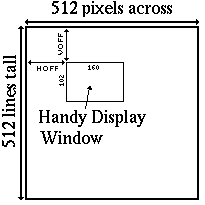

This chapter describes the steps required to create a Handy display, with the primary emphasis on the system macros and support code that you should use. All aspects of creating a display are covered, from initializing the display hardware and color palette to rendering sprites, double- buffering, waiting for end-of-frame, and more. The chapter ends with a summary of all of the system's display macros and a few examples of their usage.
To create a normal Handy display using sprites, you most:
Another Handy display that you might be interested in making is the still-picture display. This is the sort of display where you aren't interested in fancy double-buffering and all, you simply have a picture to display or you want to render a picture and then display it. To display a still-picture you must:
The Handy display macros take care of all the details of the above steps for you, making the creation and management of a Handy display an easy affair. This chapter describes these macros - with respect to the hardware they affect - and explains how to use the macros.
The sprite rendering and display creation macros can be found in the files . 6502:macros/sprite.mac and 6502:macros/display.mac. Supporting source code can be found in the files 6502:src/sprite.src and 6502:src/display.src. If you are going to use sprites you must include both sprite.mac and sprite.src. If you are going to create displays you must include both display.mac and display.src.
The MACROs in BLL do have other names !
To initialize the Handy display, you use the SETDISP macro or one of its big brothers SETDISP_60, SETDISP_50, SETDISP_30, SETDlSP_25, SETDISP_20, SETDISP_15 and SETDISP_10. These macros, known collectively as the set-display macros, do everything to make a display except actually turn the display on (you do that later after everything is all set up; see Turning The Display On And Off for details).
An essential step taken by the set-dispiay macros is to establish the display's frame rate, which is the number of times per second that a new buffer will be displayed by the hardware.
If you want your display to have one of the 'standard' frame rates, you can use one of the macros SETDISP_60, SETDISP_50, SETDISP_30, SETDISP_25, SETDISP_20, SETDISP_15 or SETDISP_10. These macros set up the display for 60, 50, 30, 25, 20, 15 or 10 frames per second respectively by invoking the SETDISP macro with appropriate arguments. If you want a frame rate that's not among the 'standard' frame rates, you can use the SETDISP macro directly. The SETOISP macro requires 5 arguments: the reload value and control flags tor both the vertical and horizontal display timers which are named HCOUNT and VCOUNT, and the magic 'P' value for the PBKUP display register. This gets the display hardware running in such a way that the correct amount of time is spent displaying each line of your buffer so that its beautiful glow correctty reflects in the eye of the beholder. To understand what values should be used for an invocation of SETDISP, refer to the Display section of the Handy Hardware Specification manual for a discussion and formulae.
The SETDISP macro also initializes DISPCTL RAM, which is the RAM-based shadow mask of the hardware's DISPCTL register.
If you are going to be using sprites then your initialization process should include a call to INITSUZY, which must be done only once and must be done before the first use of the sprite engine.
If you are going to be waiting for end-of-frame or end-of-line then your initialization process should include a call to INITEOF and/or INITEOL, which must be done only once and must be done before the first use of the wait macros.
You need to set up a color palette. See the section Setting We Display Colors for details.
If you're going to use hardware collision detection, you need to perform some initialization. See the section Setting Up For Hardware Collisions for details.
If you're going to be double-buffering, you need to perform some initialization. See the section Setting Up For Oouble-Buffering for details.
The RGB16, RGB16_I and RGB_AXY macros set up the Handy color palette for you. RGB16 and RGB16_I allow you to set up all 16 colors at once, while RGB_AXY lets you change the values of a single color.
The set-color macros take effect immediately, so if you call them at any time other than during horizontal or vertical retrace you may get display glitches. So, you may ask, how do you wait until horizontal or vertical retrace? See the section Waiting For End Of Frame And End Of Line for details.
The HOFF8, VOFF8, HOFF16 and VOFF16 macros, known collectively as the set-offset macros,
set up the horizontal and vertical offsets of the Handy display window within the imaginary display
world. The values that you might choose to provide to these macros is discvssed in detail in the
POSITlONING OF THE HANDY OISPLAY AND SPRITES chapter of this manual.
The set-offset macros take effect immediately. The very next time you render sprites the new
offsets will be used.
If you're going to use hardware collision detection, you should use ihe macro SETCOLL, which expects two arguments: the address of a collision buffer that's DISPLAY BUFSIZE big and aligned on a 4-byte boundary, and the offset into your Sprite Control Blocks of the byte that will act as your collision depository. Refer to the Handy Hardware Specification manual for complete details about the meaning of these two values.
Note that the offset to the sprite's collision depository is a 16-bit signed value, which allows you to specify a negative offset to your depository if you want your collision values to be written to memory locations that precede your SCB's. This is a very reasonable thing to do if you have SCB's that vary in size, which they do when you take advantage of the sprite engine's reuse-data ability.
Handy hardware requires that your display buffers start on an address whose binary representation ends with two bits of zero (any address which is an even multiple of 4) and must be DISPLAY BUFSIZE (currently 8,160, or $1FE0) bytes long. You can force your buffer to be aligned on an address that's a multiple of 4 by using the assembler's .ALIGN directive, like this:
SETDBUF Buffer1, Buffer2 ... . ALIGN 4 Buffer1 .DS DISPLAY_BUFSIZE .ALIGN 4 Buffer2 .DS DISPLAY_BUFSIZE
Before the first time you render sprites, you must invoke the INITSUZY macro. You should do this oniy once, during the initialization sequence of your program.
The SPRITES macro renders your list of sprites into the off-display buffer pointed to by the variable RenderButfer. The double-butfer logic initializes RenderBuffer for you. If you are not double-buffering, you need to set RenderBuffer to the address of your buffer.
The SPRITES macro doesn't automatically cause the render buffer to be displayed, but instead allows you to call SPRITES multiple times with ditferent sprite lists before making the final display visibie to the user. After you're done rendering all of your sprites, to make the RenderBuffer the on-display buffer use DBUF DISPLAY if you are double-buffering or DISPLAY if you're not.
SPRITES calls WAITSUZY for you while the sprite engine is running, which serves dual purposes: 0 it puts the CPU to sleep which allows the sprite engine to run; it returns control to you only after the sprite engine is finished, atter which it's safe for you to do any Suzy stuff like using the math hardware or starting up the sprite engine again. Note that becavse SPRITES calls WAITSUZY you should notcall WAITSUZY after calling SPRITES, else the system will hang forever.
You don't need to be double-buffering to use the SPRlTES macro. However, if you aren't double-buffering you'll need to set the Render8uffer variable to the address of your display buffer before using the SPRITES macro. Note that the value you store in RenderBuffer should be the top-left byte of your display, without regard to the state of FLIP.
The INITSUZY and SPRITES macros set up the sprite engine hardware in all the required ways, thereby simplifying your usage of the sprite engine. All of the steps performed by these macros are detailed in the Sprite Engine Initialization section of the Handy Specification document.
Usually, game designers will want to use two buffers for creating their displays. The buffers are alternately used as the display buffer and the render buffer. At any given instant, the display buffer is being displayed to the user while the render buffer is available for sprite rendering. The address of the render bufter can usually be found in a system-maintained variable named RenderBuffer, which will be described presently. When the programmer has finished rendered a new display into the render buffer, the render and display buffer roles are swapped. This technique of maintaining two buffers and swapping them as appropriate is known as double- buffering.
The Handy system software provides you with a collection of macros that make it easy to create a double-buffered display. All you need to do is:
You use the SETDBUF macro to define your display buffers and to set the system up for double- buffering. SETDBUF expects two arguments: the addresses of your two video buffers. One of the buffers will be set up as the render butfer, which you can begin rendering into. This buffer then will be displayed when you first call DBUF_DISPLAY.
The rules for declaring display buffers are discussed in the section Declaring A Display Buffer above.
You provide the SETDBUF macro with the addresses of your buffers as they are defined when FLIP mode is not selected. If you want to flip the display, you do so after calling SETDBUF by using the FLIP macro (defined below).
Any time after invoking SETDBUF you can detect which buffer the system believes to be the render butfer by examining the sys1em variable RenderBuffer, which is initialized within SETDBUF and thereafter managed by the system. At all times this variable will point to the first byte of the buffer that's currently the off-display butfer. However, note that it's not atways safe to render into the RenderBuffer without first using the WAITEOF function. See the sections Rendering Sprites and Waiting For End Of Frame And End Of Line for a description and discussion of these macros.
If you won't be using double-buffering to create your display - brave, aren't you - you don't need to use the SETDBUF macro.
When double-buffering, first you define your buffers using SETDBUF, then you render your sprites into the render buffer using SPRITES, and finally you invoke the DBUF DISPLAY macro to swap the display and render macros. Easy, eh?
Unfortunately, there's a catch: after control returns from DBUF DISPLAY the RenderBuffer will contain the address of the buffer that's still be being displayed by the hardware. If you begin to render in the buffer before waiting for the start of the next frame, then you will probably overwrite the current display betore the hardware is finished displaying it. The result: unsightly display dandruff. Instead, you'll need to wait until the hardware is finished displaying the current on- display buffer before you can start rendering into it as the new off-display butfer. This can be accomplished by using the WAITEOF (wait for end-of-frame) macro with a sequence of events something like this:
The above technique requires that you are sure that your game logic will be completed before EOF is reached. If your code runs too long one frame and you miss EOF, you end up waiting all the way to the end of the next frame. An alternate way to wait until the hardware .s finished displaying the current on-display buffer can be achieved by using the WAITNEOF (wait no-clear for end-of-frame) macro with a sequence of events something like this:
However, everything costs. The problem with these alternate techniques is that it allows you to get 'way behind EOF.
The WAITEOF and WAITNEOF mactos and the DISPLAY_EOFFLAG are described in the section Waiting For End of Frame and End of Line below.
After the DBUF_DISPLAY macro has done its specific double-buffering work, the address of the new display buffer is written to the hardware display registers by the system's end-of-trame handler.
Your program may want to present a still picture to the user. For instance, you may want to present a series of full-trame pictures to the user. Also, in a normal game environment, before your first sprite display you may want to display a startup screen. This section describes the technique for displaying a still picture.
If you are double-buffering using the system's macros and you want to render a picture into the off-display buffer, the RenderSuffer variable will contain the address of the buffer you should use. After you render into the buffer, display it as usual using the DBUF DISPLAY macro.
If you have a single buffer that you want to display, use the DISPBUF macro. DISPBUF expects 0 one argument: the address of your buffer.
To tell the hardware that you want the render buffer to be the next display buffer, use the DISPLAY macro.
The DISPLAY macro writes the RenderBuffer value DISPADRL,H registers after translating the value if the FLIP bits are set. After the hardware has finished displaying the current frame, it will use your new buffer pointer when setting up to display the next frame.
Under normal system operation the DISPLAY macro is invoked by the system's end-of-frame handler. You shouldn't need to use DISPLAY yourself.
After you've initialized the hardware. set your color palette, created a display buffer, filled it up with gorgeous imagery and told the hardware where to find it, finally you can tum on the display hardware. Aah.
The display is tumed on using the cleverly-named DISPLAY_ON macro. Let's see, what might we call the macro to tum the display off? How about DISPLAY_NOT_ON? Nah, the macro to turn off the display is called DISPLAY_OFF.
These macros work by reading the value from DISPCTL_RAM which is a RAM shadow copy of the DISPCTL hardware register, then setting or clearing the display-on bit and saving the resultant value to both DISPCTL and DISPCTL_RAM.
You can call DISPLAY_ON and DISPLAY_OFF any time you want, as often as you want.
To flip the Handy display 180° all you have to do is use the FLIP macro, which sets everything up to flip the display and sets the joystick control bit to flip the meaning of the joystick positions. This means that to flip the display, all you do is call FLIP and everything else works exactly the same, which makes flipping the display a complete no-brainer.
Note that regardless of the state of FLIP the RenderBuffer variable will contain the address of the top-left byte of the off-display buffer.
FLIP sets the DISPCTL register and DISPCTL_RAM variable when you call the macro. In the current implementation of the hardware, this could cause the display to flip immediately, even if the display is halfway rendered, which could cause the display to be mixed for part of a frame. If you want to avoid this effect, you should make sure that you call FLIP only immediately after WAITEOF. On the other hand, the effect is brief and therefore probably not worth mangling your logic too much.
Many times you will want to do something that you shouldn't do until after the video is finished processing the last line of the display (or the last pixel of the current line). For instance, you might want to change the color palette at a time that is guaranteed to not glitch the display, or you may have finished everything you need to do for the current display and you want to wait until you're sure that the display buffers have been swapped before you start creating the next display.
The instant of time when the Handy hardware has just finished displaying the lines of the current buffer is known as end of frame (or EOF). When the hardware starts displaying the next buffer, this is known as top of frame. The interval between the end and 1op of frame is known as vertical retrace, which on video displays is the time required to reposition the electron beam to the top of the video tube. Handy has no need for a vertical retrace, but a pseudo vertical retrace interval is created anyway to allow programmers to make vertical retrace sorts of changes to the system. The same is true horizontally, there is an inetara ol time known as the end of line (or EOL). and the hardware is set up to create a pseudo horizontal retrace time interval.
If you are going to use the EOF macros, you must define the constant EOF_USER. If you are going to use the EOL macros. you must define the constant EOL USER. If you don't define these constants, the associated macros won't be defined and and supporting source code won't be included.
Before you use the WAITEOF and/or WAITEOL macros you must use INITEOF and/or INITEOL. You shouldl invoke these macros only once, presumably during the initialization code of your program.
To wait for the end of frame, you use the WAITEOF macro. To wait for the end of a display line, you use the WAITEOL macro. These macros clear the system's DisplayFlags variable's DISPLAY_EOFFLAG and DISPLAY_EOLFLAG respectively, and then hold the CPU in a loop until the end-of-frame or end-of-line event takes place (which is detected by the fact that the system's EOF handler sets the DISPLAY_EOFFLAG and the EOL handter sets the DISPLAY_EOLFLAG).
WAITEOF (and WAITEOL) presume that the event of interest has not yet occurred at the time the macro is entered. This can cause problems: if your code gets behind in a given frame and reaches WAITEOF just after EOF, then WAITEOF would have you wait an entire frame, which is probably at odds with your designs. Fortunately, there is a way to either wait for EOF if it hasn't happened yet or proceed immediately if it has already occurred. This is accomplished by clearing the DISPLAY_EOFFLAG early in your logic and then using the WAITNEOF macro at the end of your logic. WAITNEOF is identical to WAITEOF except that the DISPLAY_EOFFLAG isn't cleared before the wait loop is entered. Therefore, if the EOF handler has atready gotten in there and set the DISPLAY_EOFFLAG by time your code reaches WAITNEOF, your code will detect this and exit the wait loop without delay. The problem with this technique is that if your code gets way behind the display you can end up with severe wrap-around if you're not careful.
The WAITNEOL macro is analogous horizontally to WAITNEOF.
Following is an alphabetic listing and summary of all the display creation macros. For the most up- to-date list of the arguments required by these macros, refer to the 6502:macros/display.mac and 6502:macros/sprite.mac files.
Here's some example code that shows the steps you must take to set up the display and system to get a double-buffering display with sprite rendering.
* Initialize display with frame rate of 60, EOF-capable,
* sprite-capable
EOF_USER .EQU 1 ;define to make us EOF-capable Start SETDISP_30 ;frame rate of 30 INITEOF ;set for WAITEOF INITSUZY ;spritely bits RGB16 TestPalette ;init colors SETCOLL CollBuffer,-1 ;init collision SETDBUF Bufferl,Buffer2 ;will double-buff LDA #0 ;horiz offset to 0 HOFF8 LDA #0 ;vert offset to 0 VOFF8 Loop SPRITES FirstSprite,1 ;draw sprites DBUF_DISPLAY ;double-buff disp WAITEOF ;wait until switch DISPLAY ON ;turn on display JSR PlayWithSprites ;do some stuff BRA Loop ;do it again! CollBuffer .DS DISPLAY BUFSIZE .ALIGN 4 Bufferl .DS DISPLAY BUFSIZE .ALIGN 4 Buffer2 .DS DISPLAY BUFSIZE
Here's some example code that shows the steps you must take to get a still-picture display.
* Initialize display with frame rate of 60, show picture
EOF_USER .EQU l ;define this to make us EOF-capable Start SETDISP_60 frame rate will be 60 RGB16 TestPalette ;init colors LDA #0 ;set horiz offset to 0 HOFF8 LDA #0 ;set vertical offset to 0 VOFF8 LDX #Picture DISP AX ;set address of pictuze DISPLAY ON ;turn on the display BRK .ALIGN 4 Picture .IN PictureData
This section describes Handy display and sprite positioning. It contains the following sections:
The Handy display map and sprite positioning is designed to be both convenient to use if you want to do simple sprite positioning and powerful to use if you want to let the hardware do its several flavors of clipping for you. To understand how it works, you have to know about the Handy display wortd and the Handy display window.

The Handy display world is an imaginary area that's 512 pixels across by 512 lines tall. You position your sprites relative to the top-lett comer of the display world, and you position your Handy display window somewhere within the display world. As you will come to understand, the display worid doesn't really exist other than as a concept and a numeric base used by the sprite hardware.
The Handy display window is the actual RAM display buffer which is written to by the sprite hardware and read from by the display hardware. The RAM consists of 160 pixels by 102 lines, which in 4-bit display mode is 80 bytes x 102 8160 bytes total for the display, and in 2-bit display mode is 40 bytes x 102 lines 4080 bytes total.
The display window is positioned somewhere within the display world. You specify the display window position by setting the hardware's HOFF and VOFF registers, which describe respectively the horizontal and vertical offsets of the top-left corner of the display window with respect to the top-left corner of the display world. Some program designs wilf call for setting these once and leaving them constant; other designs might incorporate changing these values to create scrolling effects.
The positioning of the display window within the world is just an imaginary thing; the display window is RAM, but the rest of the display world is just numbers used by ihe hardware to effect efficient clipping logic.
When you ask for your sprites to be rendered, only the sprites that appear within display window wilf actually be rendered.
Sprites are defined relative to the top-left corner of the display world. When a sprite's reference point is the coordinate (0,0) then the sprite is located in the top-left corner of the world. A coordinate of (511,511) locates a sprite at the bottom-right corner of the world. In order to be able to position sprites anywhere from 0 to 511, we need 9 bits for both vertical and horizontal 0 positioning. In tact, there are 16 bits for positioning on each axis, with the upper 7 bits currently ignored by the system though they should be initialized appropriately as described under 16-Bit Positioning below.
Let's look at a positioning example. Imagine that we have the X sprite shown in the above illustration, which sprite is 32 pixels wide and tall, and we want to define 16 of these along a diagonal. We define the sprite locations relative to the top-left of the display world, putting the first sprite at (0,0). the second at (32,32), and so on. Note that so far we're just talking about positioning the sprites, not displaying them. How the sprites are actually disptayed depends on the position of your display window.
To display some of the sprites we've defined, we position the display window somewhere in the display world. The positioning of the display window within the display world is independent of the positioning of our sprites within the display world. In the above illustration, the window is located with a horizontal offset of 96 and a vertical offset of 160 from the top-left of the display world. The window covers the display world coordinates from (96,160) to (255,261). Four of our sprites appear in the display window, the ones with the coordinates (128,128), (160,160). (192,192) and (224,224). When we ask to have our sprites rendered, those 4 sprites will be drawn into the display window RAM while the other 12 will be clipped by the hardware and not drawn at all.
Notice that some of our sprites are partly on-window and partly off-window. The off-window imagery of these sprites is automatically clipped by the hardware and not rendered. "Whew!" sigh the programmers who know how much work they just got out of. This means that you can make sprites slide off-window just by positioning them and letting the hardware do the work. The hardware does even fancier clipping, which is described below in the section Hardware Sprite Imagery Clipping Techniques.
There are two techniques you can use for positioning a sprite, which techniques can be intermixed in the same display without restriction. The techniques are described in the two following sections, and include:
By the way, if you define an entire display world full of sprites, you could show all the sprites simply by panning the display window around within the world. None of the sprite definitions would need to be changed to do this. You need only change HOFF and VOFF to move the window.
Handy sprites have 9 significant bits horizontally and vertically for positioning, which is great, but we recognize that programmers would rather work with 8-bit rather than 16-bit quantities whenever possible, especially with something done as often as setting the positions of sprites. Fortunately, the Handy display window technique makes it very easy to position sprites with reasonably good off-window clipping using just 8 bits for positioning. Consider the following illustration.
The above illustration shows one of the niftiest capabilities of the display window scheme. Notice that the display window is centered in the 8-bit neighborhood of the display wortd. When you set up your window in this way, you can position your sprites using only 8 bits of position and still get a good amount of hardware clipping around the edges of the window. Sprites as much as 48 pixels wide and 77 lines tall in any direction from the sprite's reference point can be positioned completely off-window (except for the very last pixel; when that one goes, get rid of the sprite!). Sprites that you want to move off-window and that are centered about the reference point can be as wide as 96 pixels and as tall as 154 lines tall. This is the most general purpose positioning of the display window within the display world when using 8-bit coordinates, and, unless you have some extraordinary needs for your sprites, this is probably the display window configuration you'll use.
On the other hand, if you have sprites that need to have dimensions that are wider than 48 pixels from the reference point or taller than 77 from the reference point, you might choose to position the display window other than as shown above. For instance, if all sprites that must move off- window left or right are defined with the reference point along the left edge of the imagery, and you set the display window to its rightmost position in the 8-bit neighborhood, then the sprites could be as wide as 96 pixels wide and still be clipped lett and right. The following illustration shows the desired position of the display window when you have sprites that are all centered about the reference point vertically and ihat all have ihe horizontal reference point at the left edge of the imagery.
Note that with either technique, in fact with any of the ways you might try to position the display window in 8-bit coordinate mode, you are restricted to a maximum sprite width of 96 pixels and height of 154 pixels if you want to be able to slide the sprite off-window. And the widest margin defines the greatest width you can have from reference point to edge, whi1e the thinnest margitl defines the maximum width you can have from the reference point to the other edge. For example, if you use an HOFF of 10, there will be 10 pixels of margin on the left and 86 pixels on the right, which means that your sprites could be up to 86 pixels from reference point to left edge of the imagery but at most 10 pixels from reference point to the right edge. All of this goes for height too. Confusing enough for you? If so, then stop reading and get back to work!
Remember that though you may be using only 8 of the 16 position bits of each axis, neverthe! ess all 16 bits are still used by the hardware so you must initialize the upper 8 bits to zero.
If you are going to use all 9 significant bits when positioning your sprites, you should, for the sake of upward compatibility with future versions of the hardware, make sure that you write complete 16-bit values to the position fields of your sprite control block.
If you want to give your sprite a negative coordinate then you should set all the high biis of the high byte of the position register. On the other hand, if it's your intention to position your sprite at a large positive coordinate (large being greater than 255) you currently can go as high as 511, which is the limit of the current hardware. and which includes setting the 10th bit of the upper position byte. To specify that you want a large positive number, you must clear the all the other bits of the high position byte. Today the distinction doesn't matter, but with tomorrow's new 10-bit position hardware you'll be glad you followed these rules because - surprise ! - your software still works, although of course it will probably break for some other thing that the hardware guys forgot to tell us about, the jerks .
Note that it would be ultra-naughty to use the unused position bits for some purpose of your own. This includes you, Peter. Don't goof around ! Remember, Uncle Oaddy is watching.
When a sprite is being drawn, Handy hardware provides two levels of hardware clipping. The clipping effects programmers are allowed to enjoy include:
Regular clipping is easy to understand. When a given line of a sprite is being rendered, as soon as one of the pixels falls off-window the hardware stops processing the line and skips ahead to the start of the next line. As soon as one of the lines is going to be rendered off-window, the hardware skips ahead through the rest of the lines looking for the next start of a quadrant (or end of data, of course).
But wait, there's more. Introducing super-clipping, complete with overty elaborate illustrations.
If the sprite's reference point falls outside the display window, the sprite engine hardware does super-clipping. Here's how it works:
Super-clipping takes place in an environment that's centered around the display window, so to make super-clipping clear our display world-window model used throughout this document needs to be rendered differently, more egotistically. Consider the RECTANGLE sprite in the above llustration. Logic might dictate that the upper-left quadrant of the sprite should be the only one of super-clipped, as it seems that that's the only quadrant pointed toward the display window. But in fact the lower-left quadrant is the only one not super-clipped. The reason why is best illuminated by the following alternative view of the Handy universe.
Note that in this scheme, sprites with negative coordinates may still be rendered in the display window. Whether or not 9-bit sprites will be rendered correctly still needs to be worked out. Suffice it to say for now that things will work correctly unless of course they don't.